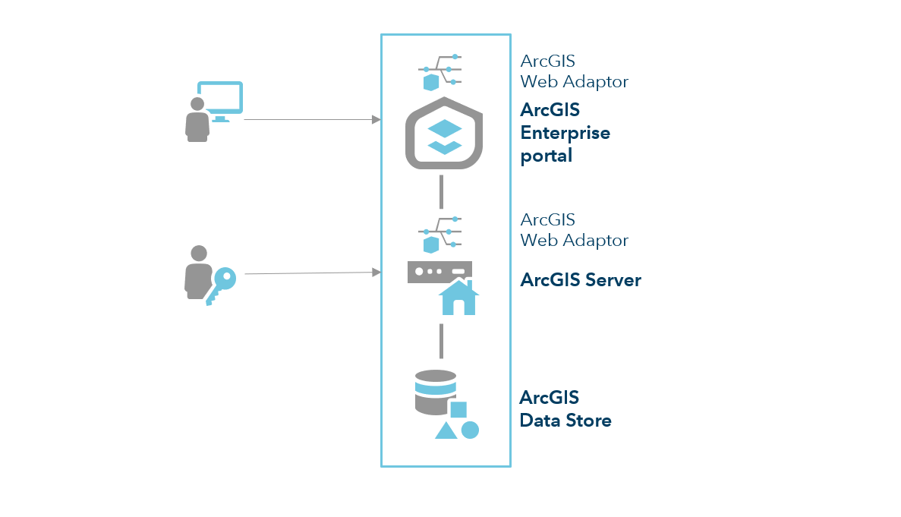
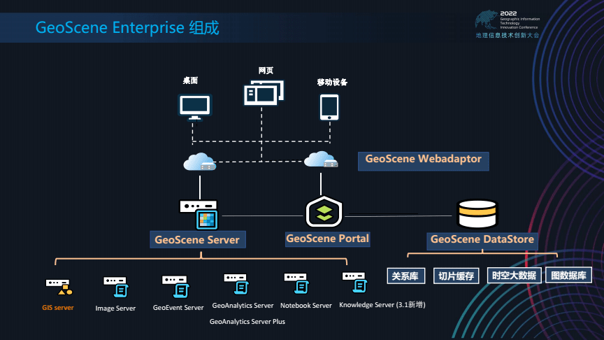
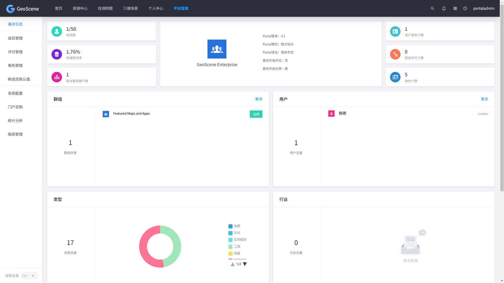
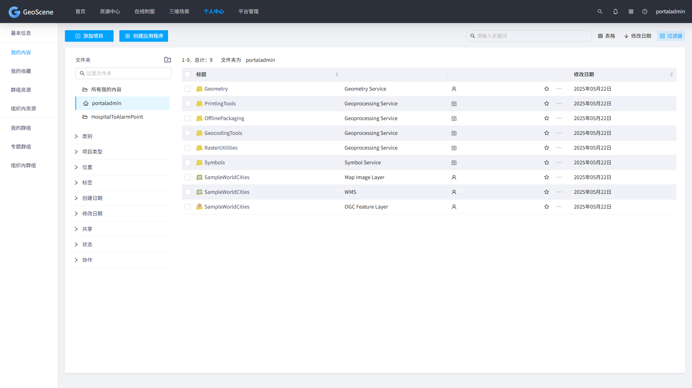
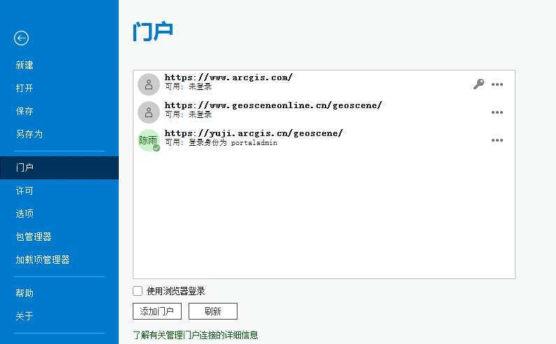
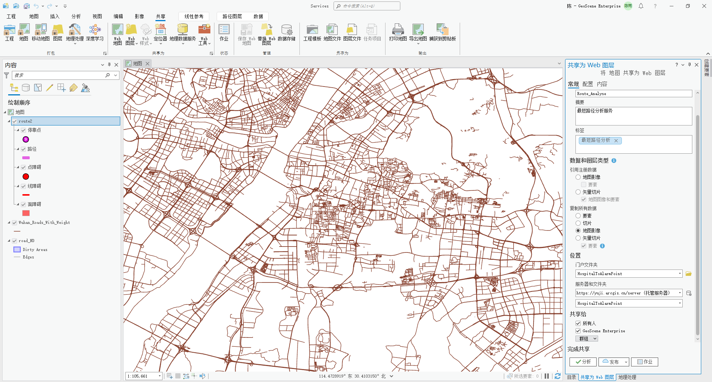
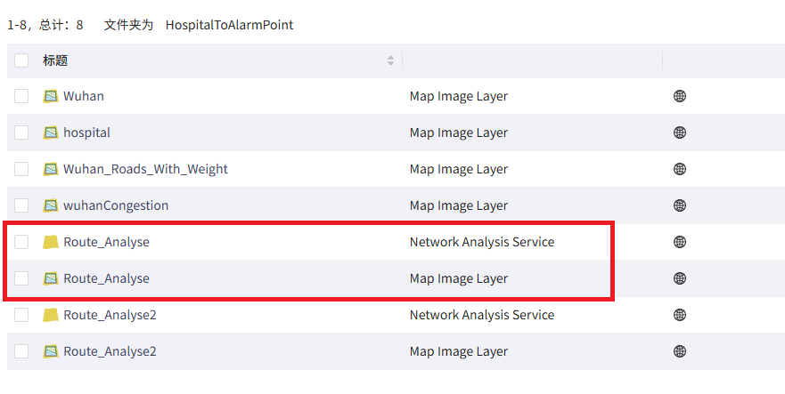

缓冲区初始距离
缓冲区扩增步长
系统名称：生命的最后一公里——基于最短路径的武汉市救护车到报警点最优距离分析系统
开发目的：通过动态规划救护车最优路线，缩短急救响应时间，从而提升危急患者的救治成功率。 系统覆盖武汉市全域，利用精准定位和路况数据，确保救护车以最快速度抵达报警地点，为抢救生命争取宝贵时间。
系统用户：报警用户、救护人员、系统管理人员
Browser/Server Architecture 浏览器/服务器架构


DataStore:Web GIS平台的数据存储核心，提供多种专用数据库类型, 为托管服务提供底层数据支撑，支持高可用性配置（如主备模式）和自动备份机制
WebAdaptor:Web服务器与GIS服务器的集成组件，主要功能包括请求转发、 安全增强、统一入口，常用于企业级部署，避免直接暴露ArcGIS Server的默认端口
Server:服务托管平台，核心功能包括服务发布与管理、资源扩展、联合托管， 支持分布式部署和负载均衡，可运行于物理机、虚拟机或云平台
Portal:Web GIS的门户中枢，主要承担资源管理、权限控制、应用构建、统一入口的作用
协同关系：用户通过Portal访问服务，Portal调用联合的ArcGIS Server服务， 服务数据存储于DataStore，Web Adaptor负责安全通信
以GeoScene Enterprise为例


HTML CSS JavaScript
API:ArcGIS Maps SDK for JavaScript
ArcGIS Pro ; ArcGIS Enterprise / GeoScene Enterprise
ArcGIS Pro
连接门户系统

共享为Web图层

查看服务器管理页面

1.路径导航指引部分有待完善
2.缺乏道路权重设计部分的编码实现
3.尚未找到实时数据的接入方法
4.编码略显凌乱，模块化程度低
1.深入理解JSON结构，完善导航信息提取和显示功能
2.编写与GEE平台的接口，引入权重设计模块
3.探索实时数据接入方法
4.采用合适前后端框架，增强功能模块化水平，提高内聚性，降低耦合性